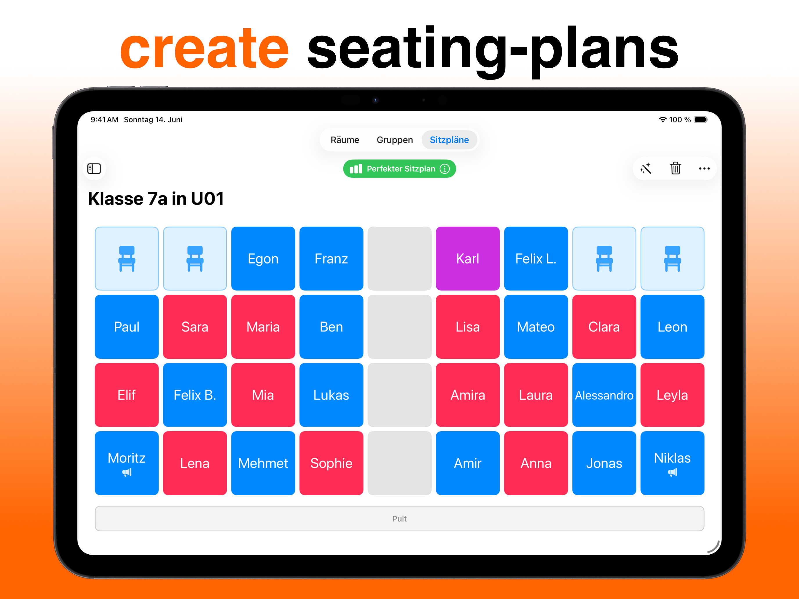
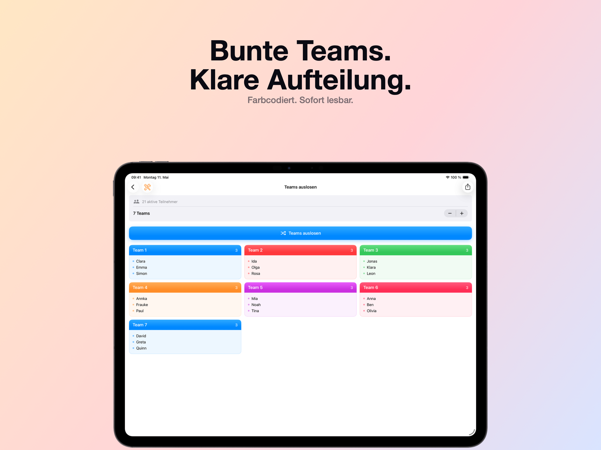
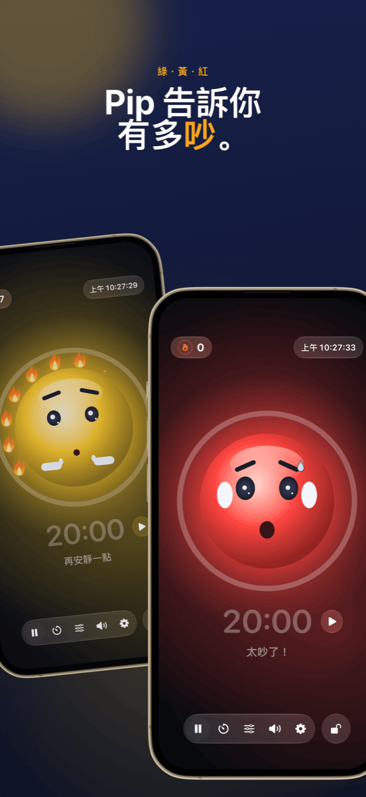

班級經營：座位、分組與噪音一手掌握
好的班級經營幾乎讓人察覺不到，而這正是它的目的：課堂順暢進行，活動轉換自然，時間花在學習上，而不是花在提醒和責備上。幾乎每節課都會重複出現三個問題：誰坐在哪裡？誰和誰一起合作？現在可以有多大的聲音？這份指南介紹一套流程，在這三個問題變成麻煩之前就把它們解決。
班級經營到底是什麼
班級經營不只是維持秩序。早在 1970 年代，美國心理學家雅各布・庫寧（Jacob Kounin）就發現，優秀老師的差別不在於他們如何處理課堂干擾，而在於他們多麼善於預防干擾。他歸納的特點包括：
- 全局掌握： 學生能感受到老師把整間教室都看在眼裡。
- 流暢與節奏： 各活動之間的轉換不浪費時間，課堂始終保持節奏。
- 全員參與： 每個人都持續投入，而不只是被點到的學生。
其中很多取決於態度和經驗。但有一部分純粹是組織工作，而這是可以事先準備的。下面的流程正是從這裡著手。
第 1 步 · 事先做一次名單只建一次，到處都能用
最浪費時間的就是重複做同一件事。從 Excel、Numbers 或 Google 試算表把班級名單匯出一次 CSV。Platzwahl 和 Team Zufall 都能直接匯入這個檔案，幾秒鐘就能建好整個班級。兩款 App 都只把姓名儲存在裝置本機，不需要帳號，也不上傳雲端。涉及學生資料時，這不是細節，而是前提。
第 2 步 · 打好基礎座位表：在問題出現之前預防
座位安排是班級經營中最有效的工具，因為它每一分鐘都在發揮作用，而你一句話都不用說。誰坐在誰旁邊，決定了聊天、分心和專注的程度。經驗證有效的做法：
- 把好動的學生分開： 不只不要並排，也不要前後相鄰。
- 善用距離： 需要協助或容易分心的學生，坐在你一眼就看得到的位置。
- 安排安靜的「定錨」： 把他們分散在較活潑的學生之間。
- 定期換座位： 例如在假期之後或每個月一次，避免形成固定的「問題角落」。
在 Platzwahl 中，你可以替每位學生設定這些規則（干擾傾向、前排座位、希望的鄰座、需要分開的組合），再讓 App 自動計算座位表。評分會顯示所有規則的達成程度。排好的座位表可以匯出 PDF 放在講桌上。

第 3 步 · 合作活動公平分組，不起爭執
「我們可以自己選組嗎？」——很多小組活動還沒開始就卡在這句話上。自由選擇很花時間，會讓小圈圈更牢固，而且總是同樣幾個學生落單。老師刻意分組雖然公平，但費時費力，為了十分鐘的兩人活動幾乎不划算。
對於大量的短時活動，隨機是最好的辦法：快速，沒有人覺得被偏袒，全班也能學會和每個人合作。關鍵在於抽籤要看得見。當全班在投影上看到名字被打亂時，就沒什麼好爭的了。
在 Team Zufall 中，選好組數，點一下取消缺席的學生，然後抽籤。分組結果可以投影到牆上，也可以匯出成 PDF。對於需要避開某些組合的長期專題，刻意分組仍然是比較好的選擇。

第 4 步 · 學習時段讓噪音看得見，而不是一直喊「安靜」
小組活動一定會有聲音，這很正常。問題在於，當沒有人知道多大聲算太吵，而你整節課都在說「噓！」的時候。提醒很快就會失效，而且偏偏打斷了那些正在專心學習的學生。
以下三點效果更好：
- 約定音量： 和全班一起決定每個活動的音量要求。個人作業時輕聲細語，小組活動時用夥伴之間聽得到的音量。
- 顯示音量： 投影上的噪音紅綠燈，會把原本需要你口頭給的回饋直接呈現給全班。
- 獎勵安靜，而不是懲罰吵鬧： 如果紅綠燈只會變紅並拿走些什麼，它很快就會變成施壓的工具，幾個嗓門大的學生也會成為全班的代罪羔羊。一個全班都能達成的共同目標效果更好。
Ruhe 正是為此而設計：吉祥物會顯示綠色、黃色或紅色，只要保持安靜，火焰就會一簇接一簇地點亮。十二簇火焰組成一個完整的火焰環，屆時全班一起慶祝。黃色和紅色的門檻可以依活動設定，也可以讓 Ruhe 自動校準。計時器顯示剩餘時間，投影畫面把一切大大地投到牆上，而操作仍留在你的 iPad 上。Ruhe 只測量音量，不會錄下任何內容。

第 5 步 · 收尾讓成功被看見
下課時，重要的是哪些地方做得好。完整的火焰環是簡短稱讚全班的好機會。如果今天沒做到，正好可以一起想想原因，而不是去找誰該負責。如果某幾張桌子一再出現問題，就表示該換新的座位表了。
採用這套流程的一節課
| 階段 | 做什麼 | 工具 |
|---|---|---|
| 上課前 | 座位表已經準備好，每個人都知道自己坐哪裡。不用搶位子。 | Platzwahl |
| 引起動機 | 依固定座位進行全班講述。 | – |
| 轉換 | 在投影上抽籤分組，缺席學生已被取消。 | Team Zufall |
| 學習時段 | 噪音紅綠燈和計時器在投影上運作，全班一起收集火焰。 | Ruhe |
| 統整 | 回到固定座位，快速看一眼火焰環。 | Ruhe |
常見問題
什麼是班級經營？
班級經營指老師為了讓上課時間盡可能成為真正的學習時間所做的一切：規則與常規、教室和座位的安排、順暢的活動轉換，以及對全班的關注。重點不在於如何處理干擾，而在於讓干擾根本不發生。
班上總是太吵怎麼辦？
首先和全班約定每個活動允許的音量。接著讓音量看得見，而不是一再提醒，例如在投影上顯示噪音紅綠燈。最有效的做法是肯定安靜的時段，而不只是懲罰吵鬧。
在課堂上使用噪音紅綠燈有意義嗎？
有，前提是把它當作共同目標，而不是懲罰工具。門檻要配合活動：小組活動可以比個人作業更吵。獎勵安靜而不是懲罰吵鬧的紅綠燈，可以避免幾個嗓門大的學生成為全班的代罪羔羊。
分組應該隨機還是刻意安排？
兩者各有用處。對於簡短而頻繁的兩人或小組活動，隨機是理想的選擇：快速、公平，不會為了誰和誰一組而爭執。對於長期專題或需要謹慎處理的組合，刻意分組比較值得。而座位表本身則應該始終經過用心規劃。